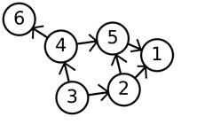
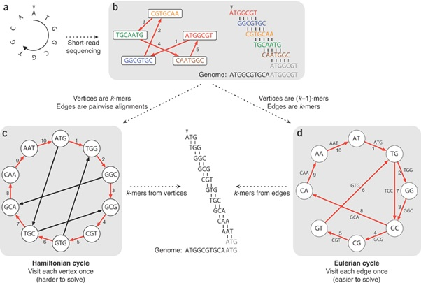
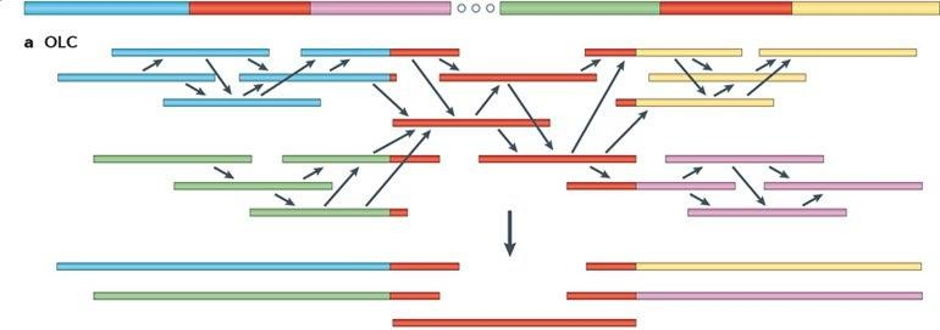
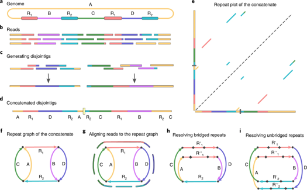
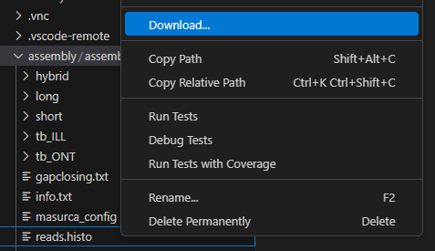
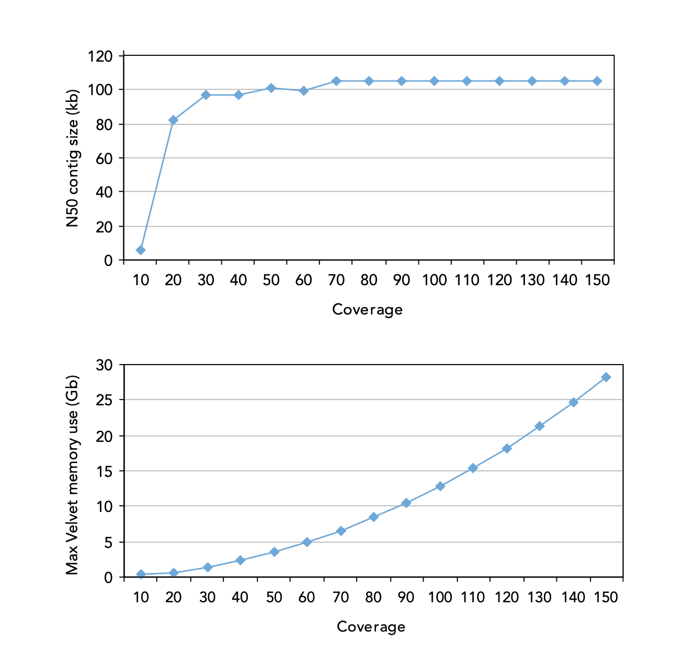

Genome Assembly
Warning
Be sure to use the assembly Codespace when initiating VM for this practical.
Introduction
We have already explored mapping, where the sequence data is aligned to a known reference genome. A complementary technique, where no reference is used or available, is called de novo assembly.
De novo assembly is the process of reconstruction of the sample genome sequence without comparison to other genomes. It follows a bottom-up strategy by which reads are overlapped and grouped into contigs. Contigs are joined into scaffolds covering, ideally, the whole of each chromosome in the organism. However de novo assembly from next generation sequence (NGS) data faces several challenges. Read lengths are short and therefore detectable overlap between reads is lower and repeat regions harder to resolve. Longer read lengths will overcome these limitations but this is technology limited. These issues can also be overcome by increasing the coverage depth, i.e. the number of reads over each part of the genome. The higher the coverage then the greater the chance of observing overlaps among reads to create larger contigs and being able to span short repeat regions.
There are three different ways to assemble a genome depending on the data you have. Short-read assembly for illumina data, long read assembly for pacbio or oxford nanopore data, and hybrid assemblies, for using the short or long read to map and using the opposite data to polish and fill the gaps. Each method uses its own graph theory to construct the genome.
Graph theory is a branch of discrete mathematics that studies problems of graphs. Graphs are sets of points called ‘vertices’ or ‘nodes’ joined by lines called ‘edges’. In the graph to the left there are 6 nodes and 7 edges. The edges are unidirectional which means that they can only be traversed in the direction of the arrow. For example paths in this graph include 3-2-5-1, 3-4-6 and 3-2-1.

Current genome assemblers employ graph theory to represent sequences and their relationships as nodes and edges. Traditional methods are typically classified into three main groups:
-
De Bruijn graph assemblers, effective for short-read data, where reads are broken into k-mers and assembled based on shared subsequences.
-
Overlap/Layout/Consensus (OLC) assemblers, suited for long-read data, where assemblies are built based on all-vs-all read overlaps.
-
Repeat graph assemblers, which are designed to handle long reads and repetitive regions by collapsing repeats into single nodes, improving assembly contiguity in complex genomes.
Modern assemblers also use variations and hybrids of these approaches, string graphs, and minimizer-based graphs, to improve performance on complex genomes and high-throughput sequencing data.

De Bruijn graph assemblers work by breaking DNA reads into small overlapping pieces called k-mers. These k-mers are used to build a graph where each edge represents a k-mer, and each node represents the beginning or end of that k-mer. Instead of comparing every read to every other read, the assembler finds paths through the graph that represent how the DNA pieces fit together.
For example, the sequence ATGGCGTGCA can be broken into 3-letter chunks (3-mers), where each chunk overlaps the next by 2 letters. These overlaps form a path through the graph that helps rebuild the original sequence.
This method is very efficient for handling millions of short DNA reads, since each k-mer is stored only once no matter how many times it appears. Several programs implement de Bruijn graph algorithms, including Euler (Pevzner, Tang, & Waterman, 2001), Velvet (Zerbino & Birney, 2008), ABySS (Simpson et al., 2009), AllPaths (Butler et al., 2008) and SOAPdenovo (Li et al., 2010).
Overlap-Layout-Consensus (OLC) assemblers build genomes by first finding overlaps between all pairs of DNA reads. Instead of breaking the reads into smaller pieces like in de Bruijn graphs, OLC compares entire reads to each other to see where they match up.
Once overlaps are found, the assembler creates a layout — a map showing how the reads connect based on those overlaps. Finally, it builds a consensus sequence by merging the overlapping reads into a single, most likely DNA sequence.
This method works well for long DNA reads, like those produced by Oxford Nanopore or PacBio sequencing, because the overlaps are easier to detect and more reliable. However, finding overlaps between all pairs of reads takes a lot of computing power, especially with large datasets.
Popular OLC assemblers include Canu, Celera Assembler, and Miniasm.

Repeat graph assemblers are designed to tackle the challenge of repetitive DNA, especially with long reads. Instead of breaking DNA into tiny pieces like de Bruijn graphs, they work with longer chunks.
They build a map (a "repeat graph") where different sections of the genome (unique and repeating) are connected based on how the long reads overlap. Repeating parts are shown as special loops in this map.
Because long reads can span across these repeats, the assembler can use the map to figure out the correct order of the unique sections even when there are many similar repeats. This helps in building more complete genomes, especially when dealing with complex, repetitive DNA. Flye is a popular tool that uses this method.

In conclusion, the de Bruijn graph assemblers are more appropriate for large amounts of data from high-coverage sequencing and have become the programs of choice when processing short reads produced by Illumina and other established platforms (>100bp). OLC and repeat graphs are ideal for assembling longer reads, such as those generated by PacBio and Oxford Nanopore technologies, particularly for resolving complex and repetitive regions of genomes where the longer span of reads provides crucial linking information.
Exercise 1: De novo Comparing different assemblies
De novo assembly is one of the most computationally demanding processes in bioinformatics. Large genomes require many hours or days of processing. A small bacterial genome may take up to several hours to assemble depending on the parameters used. Here we will assemble M. tuberculosis genomes using Spades (Bankevich et al, 2012). We will compute assembly statistics to check the quality, and review how resulting contigs can be aligned, ordered and orientated along the reference genome.
Quick start and data checks
Its important for this practical to use the codespace with the higher cpu usage, due to the constraints of tools for this practical.
Activate the relevant conda environment
conda activate assembly
Change to the data directory:
cd ~/assembly/assembly
And list the files there:
ls tb_ILL
Using knowledge of Data QC from previous practicals, run some quality checks on this data set to see if you need to trim or not and proceed from there.
Estimating genome size
If you are creating a novel genome, you might not know what is the genome size you're looking for when assembling, fortunately there are ways to discover this pre assembly.
Jellyfish is a tool that can estimate the genome size by analysing the frequency of short sequences (K-mers) within a set of unassembled sequencing reads. Jellyfish can provide an estimate of the total number of unique sequences present, which directly correlates with the genome size (Genome size = total number of K-mers/average K-mer coverage). Higher frequency k-mers often represent repetitive regions, while the peak frequency of k-mers found in lower copy numbers can be used to infer the overall genome size. Tools like GenomeScope can then take the output from Jellyfish to provide a more refined estimate and insights into genome characteristics like heterozygosity and repeat content, all before a full genome assembly is even attempted.
Let's run jellyfish
jellyfish count -C -m 21 -s 100M -t 2 -o reads.jf <(zcat tb_ILL/*.fastq.gz)
jellyfish histo reads.jf > reads.histo
Now we have created our reads.histo, we can use it to plot a k-mer frequency distribution plot.
If you have familiarity with a programming language, you can plot these yourself, and calculate the genome size yourself using the above formula. Although, GenomeScope is widely used to plot this and will also tell you your estimated genome size. Download your reads.histo and load up GenomeScope and take a look http://genomescope.org/genomescope2.0/.
You can download it by right clicking the file on the left of vscode in the explorer, and clicking download (check the image below)

Question
What do you notice from GenomeScope, what is our estimated genome size?
The estimated genome size given to us will be around 4.1mb, which is slightly shorter than the actual 4.4mb size that is MTB, but it won't be perfect and this just gives us a good guidance on what to expect
Running Spades
Spades is a genome assembly tool that is specifically designed for assembling short reads from high-throughput sequencing technologies. It uses a combination of de Bruijn graph-based assembly strategies and other techniques to produce high-quality genome assemblies
Spades is implemented in a single program that performs several steps in the assembly pipeline with a single command. The options are explained by running the command with no parameters (spades.py):
You will see that there are many options and the pipeline can be customised extensively. However, for most purposes we can run the tool with the default settings. You only need to supply the reads and an output directory.
An example invocation that takes the fastq formatted paired end files (sample1_1.fastq.gz and sample1_2.fastq.gz) and performs assembly. This may take a while so in the mean time you can read through the docs of spades to understand the unique parameters that you can use to improve to assembly. https://github.com/ablab/spades.
spades.py -1 tb_ILL/sample1_1.fastq.gz -2 tb_ILL/sample1_2.fastq.gz -o short/ -k 55 --isolate -t 2
De novo assembly gives much better results if reads are aggressively pre-filtered before passing them to the assembler. This is the same as we have seen for mapping and variant detection earlier in the course.
Although anecdotal recommendations for the k-mer length range from lower than half of the read length up to 80% of read length, the parameter is difficult to determine in advance since it depends on coverage, read length, error rates and the sample properties (repeat regions, etc). Therefore, it is advisable to perform several assemblies using different values of k-mer length to decide a value.
Spades automatically chooses a range of k-mer lengths to test and chooses the best one. The pipeline also performs reads correction, which aims to correct random errors in reads which will have a knock on effect on the k-mers used in the assembly. For time purposes, we have selected a k-mer of 55 insted of spades' automatic test of multiple.
Eventually, after Spades finishes running, several files will be obtained in the directory; the most important for our purposes are:
-
A fasta file (contigs.fasta) containing all assembled contigs
-
A fasta file (scaffolds.fasta) containing all assembled scaffolds
Scaffolds are contigs that have been chained together into larger sequences using information such from mate pair libraries and reference sequences. The scaffolds can give a better result depending on the insert size of the illumima sequence (ours is quite large), therefore we can use the scaffolds for further analysis.
Exercise 2: Assembly Quality
The outcome of de novo assembly is a set of contigs and scaffolds (assembled contigs). In a perfect assembly each contig covers exactly one chromosome in its entirety. In practice many contigs are created and the assembly quality is measured by examining their length; individually and in combination. An assembly is considered to be of good quality if relatively few long contigs cover the majority of the original or expected genome. There are different metrics used to assess the quality of assemblies:
-
N50. The length of the contig that contains the middle nucleotide when the contigs are ordered by size. Note, N80 or N60 may also be used.
-
Genome coverage. If a genome reference exists then the genome coverage can be computed as the percentage of bases in the reference covered by the assembled contigs.
-
Maximum/median/average contig size. Usually computed after removing the smallest contigs (e.g. discarding all contigs shorter than 150 bp).
We can compute these statistics with the help of a tool called QUAST (made by the same developers as spades). To get the statistics first navigate to the assembly directory and run quast
quast -r tbdb.fasta -o quast/short short/scaffolds.fasta
After it has finished, you can examine the outputs. The -o option identifies the output directory, within here you will see a bunch of files relating to your N50 and other statistics. To view the result, open up the report.html in the browser of your choice by once again downloading it to your machine the same way you downloaded the reads.histo file from before.
Question
See if you can spot the statistics we mentioned above. Compare the size of the reference with the size of the assembly. Are they different?
QUAST report includes information on statistics N50, Genome fraction and Maximum contig size that were mentioned before as well as additional metrics worth exploring. Average contig size can be additionally calculated by dividing values from fields Total length (>= 0 bp) and # contigs (>= 0 bp) or directly from FASTA file with external tools for example seqmagick. It is advised that you look at a variety of metrics and supporting analyses to determine quality of assembly.
You can also assess genome assembly quality using BUSCO (Benchmarking Universal Single-Copy Orthologs). BUSCO evaluates how complete your genome, gene set, or transcriptome is by checking for the presence of conserved genes that are expected to appear as single copies in nearly all organisms within a given lineage. It provides a detailed breakdown of complete, fragmented, and missing orthologs, helping you identify potential gaps or redundancies in your assembly. This makes BUSCO a widely trusted tool for validating both the accuracy and biological completeness of genomic data.
Let's run BUSCO now
conda deactivate
conda activate busco
busco -i short/scaffolds.fasta -l bacteria_odb12 -o busco_output -m genome -c 2 --offline
conda deactivate
-l parameter lets you select a specific lineage database to use for BUSCO analysis, and there are many different options available. For example, when assembling the tick genome in previous work, the Arthropoda database was used. To choose the most appropriate database for your genome, visit the NCBI taxonomy page for your organism, find the relevant lineage information, and then select the closest BUSCO database based on that lineage from the BUSCO database list.
The -m parameter in BUSCO specifies the mode of analysis, which determines the type of input data being assessed. It can take three main values: genome, transcriptome, and proteins. The genome mode is used for genome assemblies, the transcriptome mode is for RNA-seq data, and the proteins mode is for analysing protein sequences. Choosing the correct mode ensures that BUSCO searches for the appropriate set of single-copy orthologs based on the type of data you're analysing.
Question
Check out the BUSCO summary txt file for how many single copy orthologs it found, is it a good assembly?
We get a good result from BUSCO, with ~97% of BUSCO groups found
Using the -l information above, can you find a more specific database we can search against to get a better BUSCO score relative to our genome.
Yes, following the lineage tree that ncbi provides we can see that mycobacteriaceae_odb12 exists, so we can use that to check our BUSCO score rather than the broad bacteria one.
Our data has quite high coverage, and high depth of coverage is essential to obtain high quality assembled genomes. It is always the case that contig sizes drop when coverage decreases under a certain value, generally considered to be 50x, although such threshold will depend on the size and repeat content of the sequenced genome. A coverage limit is reached above which no improvement in assembly metrics is observed. As shown to the left, coverage greater that 50x does not significantly improve N50 in an assembly, although such thresholds will not necessarily be the same for other genomes, the principles apply for all.

More data requires more memory too, as the upper graph demonstrates. Again, the figures are genome specific but it is easy to see how large computers can quickly become necessary as coverage and genome size increase. (Illumina, 2009).
Exercise 3: Gap closing
Short read assemblies usually leave a lot of N's or unknown sequences between the scaffolds, especially between areas of repeat regions or difficult to map areas. Therefore there are tools we can use that closes these gaps as best as possible, using the paired end reads.
GapCloser uses paired-end reads where each pair has a known insert size (e.g. ~350 bp) to fill gaps between contigs. Even if one read in a pair maps to the end of one contig and its mate maps to the start of another contig, the tool can infer that those two contigs are connected, because the insert size tells it how far apart they are in the genome.
Then, GapCloser collects reads whose pairs span these gaps and tries to reconstruct the missing sequence by overlapping them in the gap region — replacing the Ns with real bases based on the consensus of those bridging reads.
Let's run gap closer to see if we can improve the asesmbly. First we need to create a config file, we have provided for you a sample one that needs editing, if you would like to know more, check out how to make one you can look at the manual. You would need to find your insert size if you were to make one, this is done by mapping the reads to a reference and using picard CollectInsertSizeMetrics.
Let's edit the config file:
conda activate assembly
nano gapclosing.txt
We have opened the text file in the terminal using nano. Now we can edit the correct parameters for our data You will see that it looks like this:
max_rd_len=150
[LIB]
avg_ins=500
reverse_seq=0
asm_flags=3
rank=1
rd_len_cutoff=150
pair_num_cutoff=1
map_len=20
q1=PATH/TO/FILE/sample1_1.fq.gz
q2=PATH/TO/FILE/sample1_2.fq.gz
/home/vscode/assembly/assembly/tb_ILL/sample1_1.fastq.gz. Edit the file and then close nano using Ctrl + X.
It will ask you to save so you will press y to save and then Enter twice to save it as the same file name.
Now we can run GapCloser.
GapCloser -a short/scaffolds.fasta -b gapclosing.txt -o short/scaffolds_gapClosed.fasta
Question
Run the same checks as above on this assembly and see if it improved, if not, why did it not improve?
MTB has highly repetitive regions, which makes gap closing challenging. Even with high-quality paired-end reads, this is the limitation of short-read assemblies.
Advanced Topics
Improving assemblies
The quality of the assembly is determined by a number of factors, including the type of software used, the length of reads and the repetitive nature or complexity of the genome. For example, the assembly of Plasmodium genomes is more difficult than that of most bacteria (due to the high AT content and repeats). A good assembly of a bacterial genome will return 20-100 supercontigs. It is possible to manually / visually improve assemblies and annotation within Artemis. To improve the assembly in a more automated fashion, there is other software:
-
SSPACE:
This tool can scaffold contigs. Although spades can also scaffold contigs, SSPACE generally performs better.
-
Abacas:
This tool has the option to design primers that can be used to generate a PCR product to span a possible gap. The resulting new sequence can then be included in the assembly. This process is called finishing.
-
Image:
This tool can close gaps in the assembly automatically. First the reads are mapped against the assembly. Using all reads that map close to a gap and with their mate pairs within the gap, it is possible to perform a local assembly. This process is repeated iteratively. This procedure can close up to 80% of the sequencing gaps (Tasi et al, 2010).
-
iCORN:
This tool can correct base errors in the sequence. Reads are mapped against the reference and differences are called. Those differences or variants that surpass a specified quality threshold are corrected. A correction is accepted if the amount of perfect mapping reads does not decrease. This algorithm also runs iteratively. Here, perfect mapping refers to the read and its mate pair mapping in the expected insert size without any difference to the iteratively derived reference.
All these programs are available through the PAGIT suite (post assembly genome improvement toolkit). However they are mostly deprecated and no longer used.
Annotations
Once we have assembled the genome, we can annotate using tools such as GALBA, Augustus, or, primarily for bacteria, Prokka. They all implement different strategies depending on the data you have.
Prokka is widely used for bacterial genome annotation because it is fast, automated, and relies heavily on homology-based approaches. It uses a database of known bacterial proteins and RNAs (like rRNA, tRNA) to annotate genes by finding matches in your genome. Prokka is very effective when you have a relatively clean bacterial assembly and want a quick, standardised set of annotations.
GALBA uses protein sequences from your assembly and similar species to find regions of your genome that align with conserved domains or functional motifs from known genes in other species. This approach works well if you have closely related species with well-annotated genomes, allowing you to leverage their protein data for accurate gene prediction.
Augustus is more versatile because it can also use RNA-seq data to guide gene prediction. When you provide RNA-seq reads (either aligned or raw), Augustus can incorporate this transcriptomic data to improve its gene predictions. This method is especially useful when there is limited or no closely related genomic data to rely on. Augustus uses RNA-seq data to identify transcription start sites, exon-intron boundaries, and alternative splicing events by aligning the RNA-seq reads to the genome. The software then uses these alignments to fine-tune the prediction of gene models, ensuring that predicted genes are supported by actual expression data.
In practice, you can combine both methods: use protein-based annotation from GALBA for structural gene prediction, RNA-seq data for more refined predictions with Augustus, and for bacterial genomes, run Prokka to rapidly generate a full annotation including coding sequences, RNAs, and functional descriptions.
Exercise 4 Long read assembly
Long reads generated by third-generation sequencing technologies, such as those developed by Oxford Nanopore Technologies, have revolutionised genome assembly approaches. Unlike short reads, which often struggle to resolve repetitive regions and complex genomic structures, long reads are capable of spanning these challenging areas, providing critical information that improves the accuracy and contiguity of assembled genomes. This ability means that assemblies generated from long-read data typically have fewer gaps, longer contigs, and better representation of the true genome structure. Furthermore, long reads enable the detection and assembly of large structural variants, mobile genetic elements, and previously unresolved regions, which are essential for a comprehensive understanding of genome organisation, evolution, and function. Because of these advantages, long-read sequencing is now considered the gold standard for high-quality de novo assembly, making it possible to reconstruct entire chromosomes and even complete genomes with minimal fragmentation, often without the need for additional scaffolding from short-read data. Long reads also enable better resolution of structural variations, such as insertions, deletions, and inversions. Additionally, they improve the assembly of complex genomic regions like GC-rich areas and tandem repeats.
Here we will be using the same sample we used for the short reads, but that has been sequenced on the MinION software, so we can compare directly between the two platforms. You will find this data in the tb_ONT directory. We will be using flye, the most recent and newest long read assembler, that uses the repeat graph method, as well as canu, a slightly older assembler but still good, and we will compare which one performed better.
flye --nano-hq tb_ONT/sample1_ONT.fastq.gz --genome-size 4.1m --threads 2 --read-error 0.06 -o long/
Now we have run flye we can check out our N50 using QUAST again.
quast -r tbdb.fasta -o quast_long long/assembly.fasta
Don't forget to also run BUSCO to get the BUSCO score.
Question
Check out the N50 value, is it better or worse than the short reads assembly, why is this the case
We should have got a much higher N50 value, with far fewer contigs, this is due to ONT being able to bridge the gap across the difficult to map areas. Flye specifically has an algorithm to map the repeats and find the ideal path from the repeats that short read assemblers cannot do
After running flye we can also use canu to compare the best assembly, read the docs on canu and create a command to create an assembly https://canu.readthedocs.io/en/latest/quick-start.html#assembling-pacbio-clr-or-nanopore-data .
canu
Now there are multiple steps we can take after to improve our assembly, and we will be using our flye assembly for further analysis
Scaffolding using long-read data only involves harnessing the long reads' ability to span large genomic distances, which helps connect contigs separated by gaps or repetitive regions. This method does not rely on short-read data and instead uses the length and continuity of long reads to form accurate, large-scale scaffolds, enhancing the overall structure and completeness of the genome assembly.
ntLink scaffold target=long/assembly.fasta reads=tb_ONT/sample1_ONT.fastq.gz G=500 rounds=3 t=2
We can now close the gaps between the scaffolds using a tool called tgsgapcloser. Gap closing involves filling the sequence gaps left between contigs in an assembly. This process uses the overlap between neighbouring contigs or additional sequencing reads to infer and fill in missing genomic regions. The aim is to produce a more complete assembly by resolving ambiguities in regions that are difficult to sequence or span, improving both contiguity and accuracy.
mkdir long/tgs_gapcloser
tgsgapcloser \
--scaff long/assembly.fasta.k32.w100.z1000.stitch.abyss-scaffold.fa \
--reads tb_ONT/sample1_ONT.fastq.gz \
--output long/tgs_gapcloser \
--ne
Polishing improves genome assembly accuracy by correcting sequencing errors using the original raw reads. The raw reads are first aligned back to the draft assembly to identify mismatches and indels. These alignments guide the correction process, where consensus sequences are recalculated. The result is a more accurate and reliable genome sequence, closer to the true biological reference.
First we have to change the name of our scaffolding sequences so minimap and racon understand what the sequence is.
cp long/tgs_gapcloser.scaff_seqs long/tgs_gapcloser.scaff_seqs.fa
Then we can map the original data to our current sequence, this gives us a racon file we can use to polish. By aligning the raw reads to our newly generated sequence, it allows us to identify regions with any gaps that could potentially be removed, this essentially tries to polish and make our genome as robust as possible.
minimap2 -t 2 -x map-ont long/tgs_gapcloser.scaff_seqs.fa tb_ONT/sample1_ONT.fastq.gz > long/racon.paf
Finally we run racon to polish our genome
racon -u --no-trimming -t 4 tb_ONT/sample1_ONT.fastq.gz long/racon.paf long/tgs_gapcloser.scaff_seqs.fa > long/final_assembly.fa
Question
Check out the final BUSCO and QUAST results, what are the differences between the previous results and this one, has it improved?
Not much has improved if you used QUAST, apart from the the # N's per 100 kbp section, we have drastically reduced our assemblies misalignments or regions with ambiguity by polishing.
Polishing can be run multiple times in order to get the final assembly to the highest quality, however it's important not to over polish and introduce bias into the dataset. One round of polishing may be enough, it is simply up to your dataset and what you feel is best.
Exercise 5 Hybrid assembly
Hybrid assembly strategically combines the strengths of long and short sequencing reads. Long reads provide the crucial scaffolding framework, spanning repetitive and complex regions that often fragment assemblies based solely on shorter reads. This scaffolding information allows us to order and orient the highly accurate contigs generated from short-read data, effectively bridging gaps and creating more contiguous genomic sequences. Subsequently, the high base-level accuracy of the short reads is often used to polish the long-read-based scaffold, correcting sequencing errors and yielding a final assembly that is both structurally comprehensive and highly accurate at the nucleotide level.
There are multiple hybrid assemblers out there today, however it has become more common to use a hybrid approach by initially aligning using either short reads or long reads and then polishing with the opposite such as unicycler. Most hybrid assemblers in the past used short reads initially, and then used long reads to polish the assembly. This has changed over the years due to the quality of reads that nanopore and pacbio produces, and now its more preferable to create an assembly using long reads, and then polish with the short reads.
We will attempt the hybrid approach and see how much better the assembly is.
First we will once again use spades, however we will give spades the long read data as a third option. This allows spades to apply the BayesHammer approach with both sets of data rather than one, which improves error correction and assembly quality. The method enhances the accuracy of contig formation by taking advantage of long reads' structural information while refining it with the high base-level accuracy of short reads.
spades.py -1 tb_ILL/sample1_1.fastq.gz -2 tb_ILL/sample1_2.fastq.gz --nanopore tb_ONT/sample1_ONT.fastq.gz -t 2 -o hybrid/spades/
Once again we need to check our assembly, you should now be familiar with this process..
Question
How is the N50 value, is it better than both the long and short read approaches?
You will see that the result is an N50 less than what we hoped for. We have improved our assembly with a higher N50 than short reads, however the N50 is still lower than our long read only. This is because spades uses a short read primary approach and long reads to complement.
Now its time for another hybrid assembler to see if we get a better result. This tool is called MaSuRCA, a popular hybrid assembler due to its uniqueness of creating "super reads" by combining the data from short and long reads, which are then used to improve the assembly. These super reads enhance the error correction and assembly accuracy, leveraging the long reads for their structural information and the short reads for their higher base-level accuracy. This approach helps to generate a more complete and accurate assembly by correcting errors in long reads and scaffolding contigs. The tool uses these data in parallel, ensuring optimal use of both types of sequencing.
In order to run MaSuRCA we need to create a config file and edit it to where our data is. We have already created this for you but its recommended to take a look inside at the config file to understand it.
nano masurca_config
masurca masurca_config
bash assemble.sh
Finally we can check our results from MaSuRCA using, that's right, you guessed it, QUAST and BUSCO again.
quast -o quast/hybrid/masurca CA.mr.55.17.15.0.02/primary.genome.scf.fasta
Run the polishing step to see if you can get an even better N50 score or less contigs, and then compare to the existing reference using QUAST.
From these results we can see we have an extremely good assembly, without even starting the full polishing process yet. Overall hybrid assembly is the best approach to building a genome assembly, however most tools now involve more complicated steps when it comes to the hybrid approach. One of the best tools out there is called autocycler, which runs multiple k-mers to utilise the best one, as well as subsetting the long read and using multiple long read assemblers in order to combine and cluster them together. In the interest of time and not making everyone wait 2 days, this is just a brief overview of the tools used to create a reference genome, providing guidance for your project, noting that each genome assembly is unique.
Overview
This is a quick introduction to genome assembly, after there are still many steps to complete such as annotation (we will touch on that later), mitochondrion discovery, orthologs and more. There is also the step of repeat masking in highly repetitive genomes which we have not done in this case which can be beneficial. To get more insight into genome assemblies it is important to research these, or chat with one of us in the room or online and we can help.
References
Assefa, S., Keane, T. M., Otto, T. D., Newbold, C., & Berriman, M. (2009). ABACAS: algorithm-based automatic contiguation of assembled sequences. Bioinformatics (Oxford, England), 25(15), 1968-9. doi:10.1093/bioinformatics/btp347
Butler, J., MacCallum, I., Kleber, M., Shlyakhter, I. A, Belmonte, M. K., Lander, E. S., Nusbaum, C., et al. (2008). ALLPATHS: de novo assembly of whole-genome shotgun microreads. Genome research, 18(5), 810-20. doi:10.1101/gr.7337908
Carver, T. J., Rutherford, K. M., Berriman, M., Rajandream, M.-A., Barrell, B. G., & Parkhill, J. (2005). ACT: the Artemis Comparison Tool. Bioinformatics (Oxford, England), 21(16), 3422-3. doi:10.1093/bioinformatics/bti553
Compeau, P.E.C., Pevzner, P.A., Tesler, G. (2007) How to apply de Bruijn graphs to genome assembly. Nature Biotechnology 29(11) 987-991
Dohm, J. C., Lottaz, C., Borodina, T., & Himmelbauer, H. (2007). SHARCGS, a fast and highly accurate short-read assembly algorithm for de novo genomic sequencing. Genome research, 17(11), 1697-706. doi:10.1101/gr.6435207
Illumina, I. (2009). De Novo Assembly Using Illumina Reads. Analyzer. Retrieved from http://scholar.google.com/scholar?hl=en&btnG=Search&q=intitle:De+Novo+Assembly+Using+Illumina+Reads#0
Jeck, W. R., Reinhardt, J. a, Baltrus, D. a, Hickenbotham, M. T., Magrini, V., Mardis, E. R., Dangl, J. L., et al. (2007). Extending assembly of short DNA sequences to handle error. Bioinformatics (Oxford, England), 23(21), 2942-4. doi:10.1093/bioinformatics/btm451
Li, R., Zhu, H., Ruan, J., Qian, W., Fang, X., Shi, Z., Li, Y., et al. (2010). De novo assembly of human genomes with massively parallel short read sequencing. Genome research, 20(2), 265-72. doi:10.1101/gr.097261.109
Margulies, M., Egholm, M., Altman, W. E., Attiya, S., Bader, J. S., Bemben, L. a, Berka, J., et al. (2005). Genome sequencing in microfabricated high-density picolitre reactors. Nature, 437(7057), 376-80. doi:10.1038/nature03959
Miller, J. R., Koren, S., & Sutton, G. (2010). Assembly algorithms for next-generation sequencing data. Genomics, 95(6), 315-27. Elsevier Inc. doi:10.1016/j.ygeno.2010.03.001
Pevzner, P. a, Tang, H., & Waterman, M. S. (2001). An Eulerian path approach to DNA fragment assembly. Proceedings of the National Academy of Sciences of the United States of America, 98(17), 9748-53. doi:10.1073/pnas.171285098
Simpson, J. T., Wong, K., Jackman, S. D., Schein, J. E., Jones, S. J. M., & Birol, I. (2009). ABySS: a parallel assembler for short read sequence data. Genome research, 19(6), 1117-23. doi:10.1101/gr.089532.108
Warren, R. L., Sutton, G. G., Jones, S. J. M., & Holt, R. a. (2007). Assembling millions of short DNA sequences using SSAKE. Bioinformatics (Oxford, England), 23(4), 500-1. doi:10.1093/bioinformatics/btl629
Zerbino, D. R., & Birney, E. (2008). Velvet: algorithms for de novo short read assembly using de Bruijn graphs. Genome research, 18(5), 821-9. doi:10.1101/gr.074492.107
Acknowledgements: Thomas Otto and Wellcome Trust.